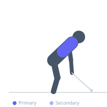
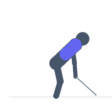

Exercise guide / High Pulley Straight-Arm Pull (Facing Away)
High Pulley Straight-Arm Pull (Facing Away)
The facing-away high pulley straight-arm pull has the lifter facing away from the cable stack, gripping a high attachment and pulling it forward and downward with straight arms. Unlike the standard straight-arm pulldown (facing the cable), this variation loads the lats through a forward-to-down arc that challenges them in both the overhead stretched position and the contracted position differently, with greater emphasis on the lower lat fibers.
Primary muscles
latissimus dorsi
Secondary muscles
teres major
trapezius lower
Stabilizers
erector spinae
Equipment
Cable Machine (High Pulley)


Starting position
- Stand facing away from a high cable pulley. Reach back overhead and grasp a rope or straight bar. Begin with arms extended overhead toward the pulley.
Setup
- Set the pulley to the highest position. Stand close enough that the arms are reaching overhead at approximately the cable's exit angle.
Steps
- Step 1: Begin with arms extended overhead gripping the attachment.
- Step 2: With straight arms, pull the attachment forward and downward in an arc.
- Step 3: Continue until the arms are at approximately hip or thigh level.
- Step 4: Hold 1 second at peak contraction.
- Step 5: Return under control — arms travel back and overhead.
Coaching cues
- Arms stay locked — think 'pull the earth down'
- Feel the lat at the top stretch
- Hips stay stationary throughout
Breathing
- Exhale on the pull. Inhale on the return overhead.
Range of motion
- Arms overhead to arms at hips, maintaining straight elbows throughout.
Tempo
- 2-1-3-0
Common mistakes
- Bending the elbows — arms must stay straight
- Leaning forward excessively to extend range — keep the torso relatively upright
Safety
- The overhead starting position requires shoulder mobility — assess before loading
- Moderate loads only — straight-arm exercises have high moment arm demands
Training
- hypertrophy: 10–15 reps
- hypertrophy: 3–4 sets
- Rest: {'hypertrophy': 90}